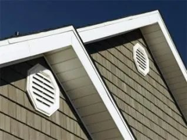
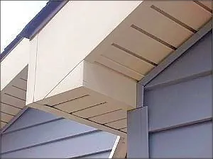

Request Free Quote!
Replacing your old soffit and fascia or covering your existing wood soffit and fascia with new aluminum will not only enhance the appearance of your home, but also protect those areas from damage. The best part? You won’t have to do any more painting. American Roofing Company’s aluminum soffit and fascia comes in numerous colors that will accent your home.
What is Soffit and Fascia?
An exterior soffit can be seen on the outside area of the house beneath the rafter tails. The fascia is the exposed band you see at the end of the rafters. Though small, these areas of a house’s exterior can make a big difference in the visual appeal and finish of your home.
When Do I Need to Replace My Soffit and Fascia?
What is the Purpose of a Soffit?
A soffit is both functional and aesthetic. Functionally, the soffit protects rafters on a house from rain, snow, and sun. Aesthetically, since it is a visible part of the exterior of a house, it serves as part of the overall visual look. However, your soffit and fascia aren’t there for aesthetic reasons alone. These features shield the outer edges of your roof and prevent the elements from penetrating and damaging the roofing system.
What is the Difference between a Fascia and a Soffit?
The fascia is the exposed band you’ll notice at the end of rafters. The soffit is located beneath the rafters. The fascia also serves as extra gutter support. To help maintain your soffit and fascia, inspect them regularly for damage. Call on our professionals to replace your soffit and fascia in Salt Lake City, UT, if you spot these problems:
- Bite marks from pests like rodents that have entered the roofing
- Bees, wasps, and other insects nesting in cracks and holes on the soffit and fascia
- Moisture rotting the soffit or fascia or the presence of mold and algae
- Paint peeling or bubbling from moisture trapped beneath
- Water damage making the fascia boards sag
- Missing fascia boards
Can You Put New Soffits Over Old Ones?
Yes, you can cover wooden soffits with vinyl or aluminum soffits, provided that the old soffits are in good condition. But wooden soffits should be inspected for rotten boards or other problems mentioned above. You can test for wood rot by probing each soffit with a screwdriver or awl. If it enters the wood too easily, the wood is rotten—and wood rot can spread.
Consider replacing the soffit and fascia if they’re past their life expectancies, as they’ll be less reliable and deteriorate faster. Here are the average lifespans according to material type:
- Wood soffit and fascia boards last 5-15 years, depending on how well-maintained they are.
- UPVC and vinyl soffit and fascia typically last around 10-20 years.
At American Roofing Company offers aluminum soffit and fascia, which can last well over 20 years. This material won’t rot or peel like wood or turn brittle like UPVC and vinyl.
How do you Fix a Sagging Soffit?
This depends on the material of the soffit. If the soffits are made of wood, they may be rotted and must be replaced. However, if they are made of vinyl or aluminum, they may have simply come loose from the frame. You may be able to remove the section that is sagging and then reinstall it better so that the nails or screws pull it tight again, although you should hire someone to perform this task if you’re not experienced at working with vinyl or aluminum panels.


Choose American Roofing Company for Your Soffit and Fascia Replacement Needs
American Roofing Company is proud to be your local roofing company. Our team has been working on homes for decades. With more than 60 years of combined knowledge and experience in dealing with home exteriors, we can help recommend the right soffit and fascia look for your home.